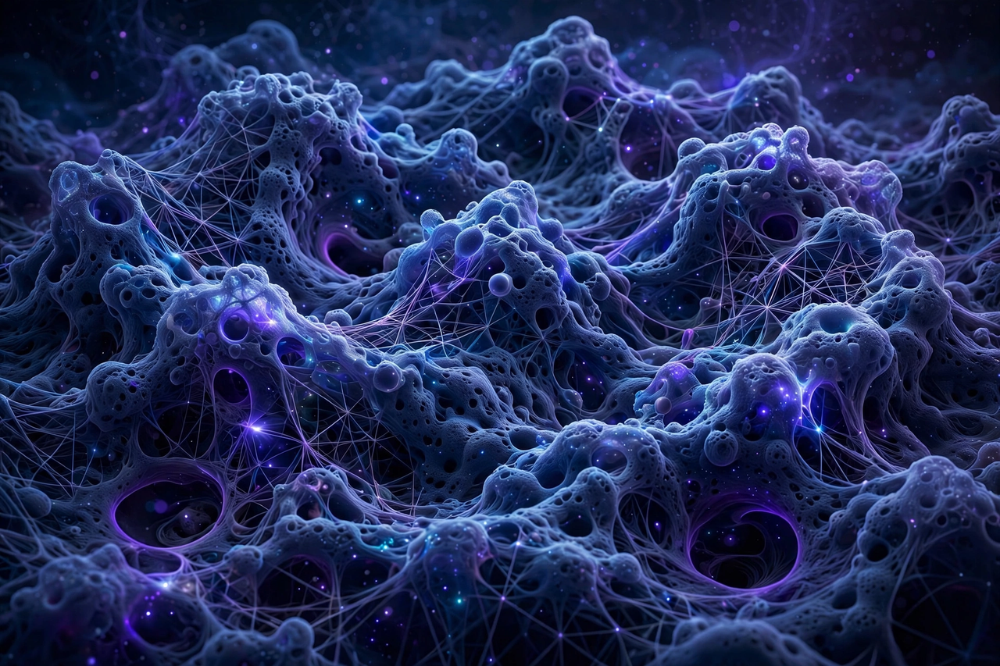

Quantum gravity

[Image: Artistic rendering of spacetime foam at the Planck scale, a froth of fluctuating geometry]Quantum gravity (QG) is a field of theoretical physics that seeks to describe gravity according to the principles of quantum mechanics. It deals with environments in which neither gravitational nor quantum effects can be ignored, such as in the vicinity of black holes or the very early universe (the first Planck time after the Big Bang).
The problem: General relativity treats spacetime as a smooth, dynamic geometry, while quantum field theory assumes a fixed background; naive quantisation of gravity yields a non-renormalisable theory. No approach has experimental confirmation — the Planck scale (~10¹⁹ GeV) is far beyond accelerators — but indirect tests are accumulating: black-hole thermodynamics (Bekenstein–Hawking entropy, Hawking radiation), gravitational-wave observations, and tabletop proposals to detect gravity's quantum character through entanglement. The main research programmes are String theory and Loop quantum gravity, alongside causal dynamical triangulations, asymptotic safety, causal sets and others.
Why it is hard, and why it matters
Gravity is absurdly weak at particle scales, so its quantum effects hide; but black holes — where a star's worth of mass is compressed to quantum scales — force the issue, and the information paradox (does information falling into a black hole survive its evaporation?) has become quantum gravity's sharpest test-bed, yielding results like the Page curve and holographic 'island' computations (2019) that suggest information does escape. A successful theory must also explain the origin of spacetime itself, which in holographic approaches appears as an emergent property of entanglement in a boundary quantum theory.